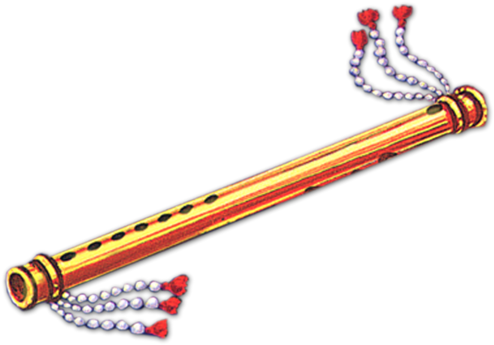

Flute playing
1. Getting Into Flute Playing:
.png)
I started playing the flute recently, and I'm loving the beautiful sounds it makes. It's an Indian classical instrument, and when played just right, it sounds amazing. My roommate jokes that sometimes it can be a bit annoying, but that's part of the fun!
2. Attraction to the Flute
What drew me to the flute was not just its melodic charm but also its unique rarity. Unlike more common instruments, the flute, with its demanding techniques, became an irresistible challenge, igniting my passion for the instrument.
3. Challenges and Dediction
Playing the flute demands a delicate coordination of breathing, hand movements, and blowing technique. Over the past six months of dedicated practice, I've learned that achieving the perfect blowing technique and pressure is a formidable task. Despite the physical demands that often leave my fingers and lungs pleading for a break, the desire to master this intricate instrument keeps me going.
4. Emotional Boost:
Playing the flute helps me relax and feel better when I'm stressed. It's like a secret weapon that cheers me up instantly. The flute is more than just an instrument; it's like a friend that makes me feel calm and happy.
5. Grwoing with the flute
Practicing every day has taught me to be disciplined and not give up when things get hard. It's like a journey where you learn and get better every day. I'm not perfect, but that's okay. It's about enjoying the process.